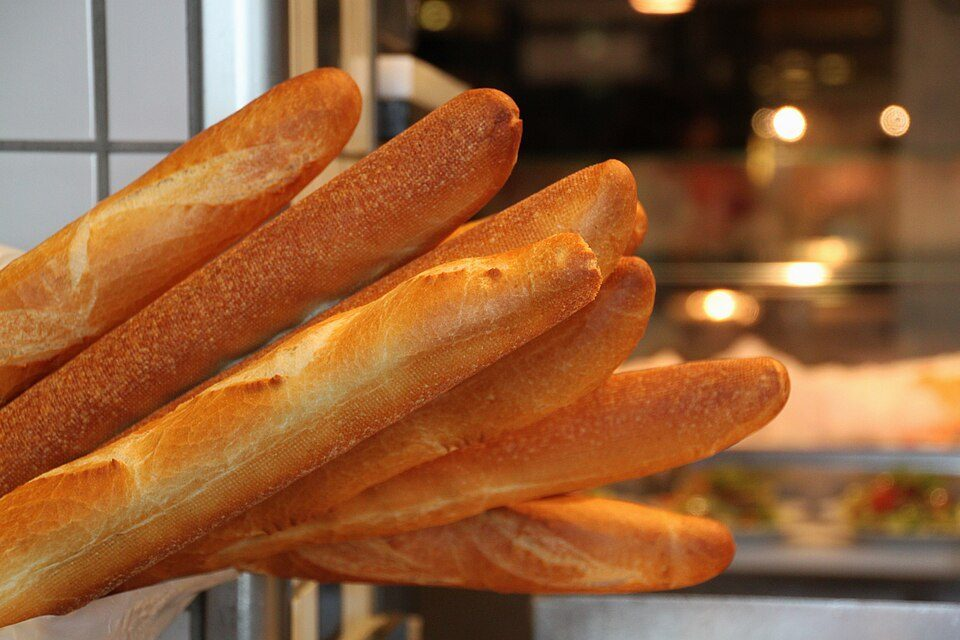
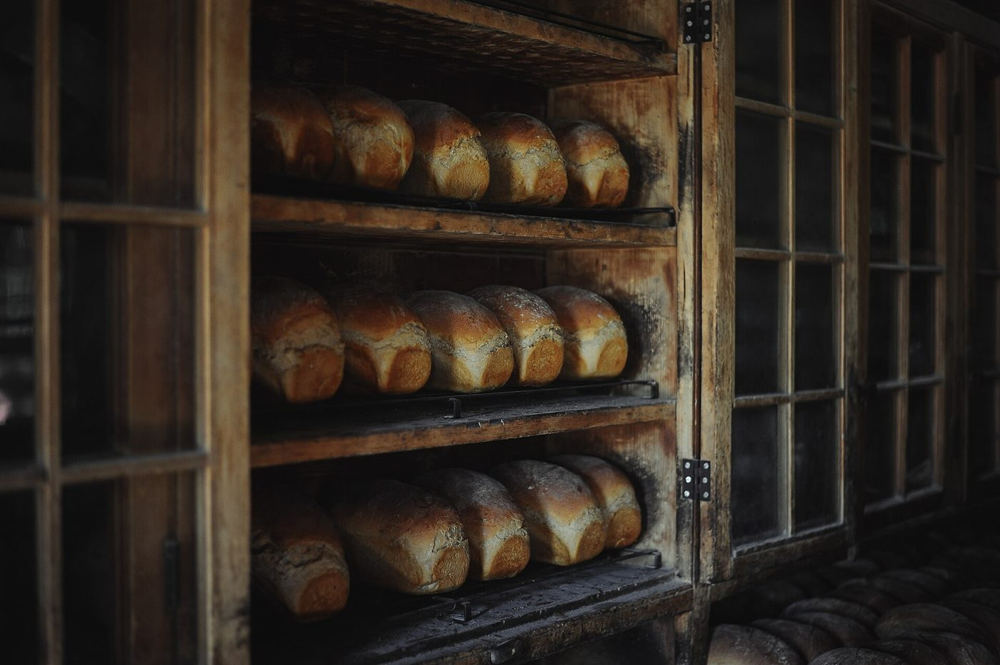
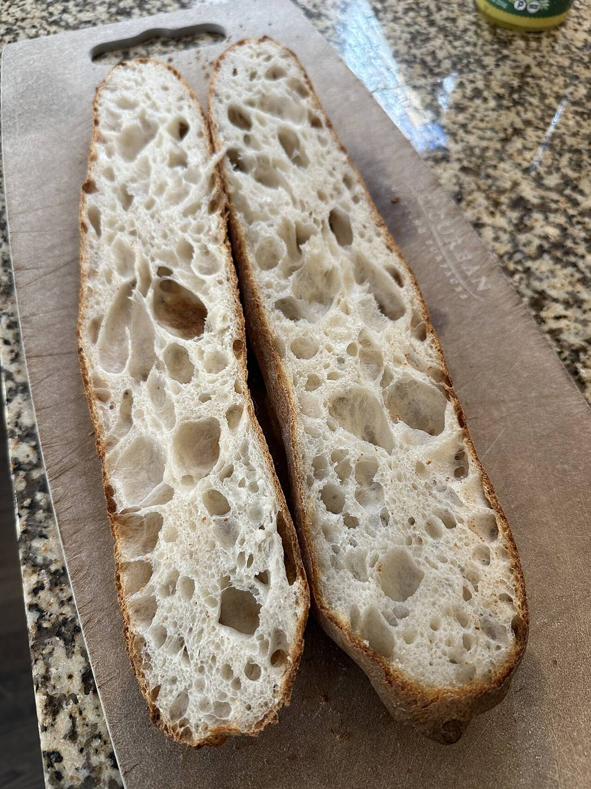
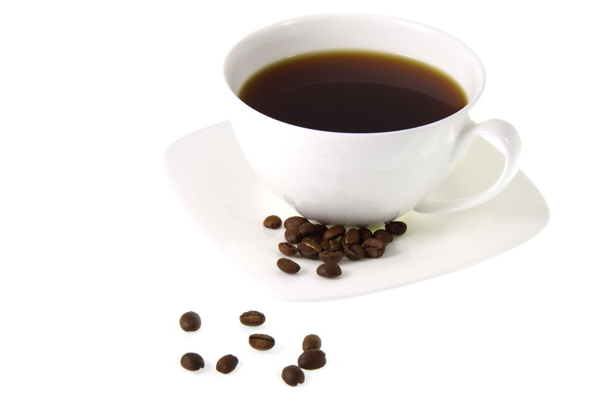

制作側の連想
コインプッシャーの部位を、配置図にしてみる
このサイトは、コインを押し出して遊ぶ台の中身を図にしたつもりで作りました。六つの部位に番号をふり、上の図と並べています。制作側の連想で、お店の理念・由来とは無関係です。実在の機種の仕様を示すものでもありません。
凡例
六つの部位
- 1投入口コインを入れる細い口。ここから落ちたコインが、ステージの奥へ向かう。
- 2ステージコインを並べて置いておく、水平な棚板。
- 3プッシャーステージの奥から手前へ往復して、コインを押し出す板。
- 4落下口ステージの手前の端。押されたコインがこぼれ落ちる縁。
- 5受け皿落ちてきたコインを受け止める、手前の浅い皿。
- 6ガラスカバー中のようすを見るための、前面の透明な板。
ギャラリー(イメージ)
パンとコーヒー豆の写真





写真はパンやコーヒー豆のイメージです。お店のものではなく、お店で提供している商品を示すものでもありません。
ひとやすみ
パンの断面とコーヒー



ご案内
お店のこと(確認できたものだけ)
| 所在地 | 〒399-8603 長野県北安曇郡池田町中鵜1376 |
|---|---|
| 電話 | 準備中 |
| 営業時間 | 準備中 |
| 定休日 | 準備中 |
| ご予約 | 準備中 |
| 駐車場 | 準備中 |
| SNS | Instagram @azuminobunga |